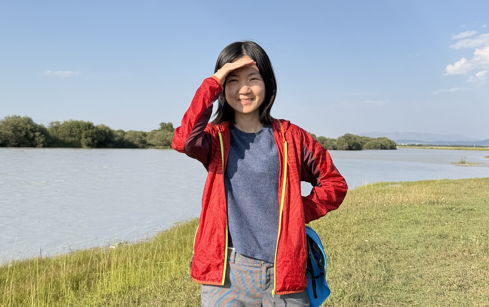
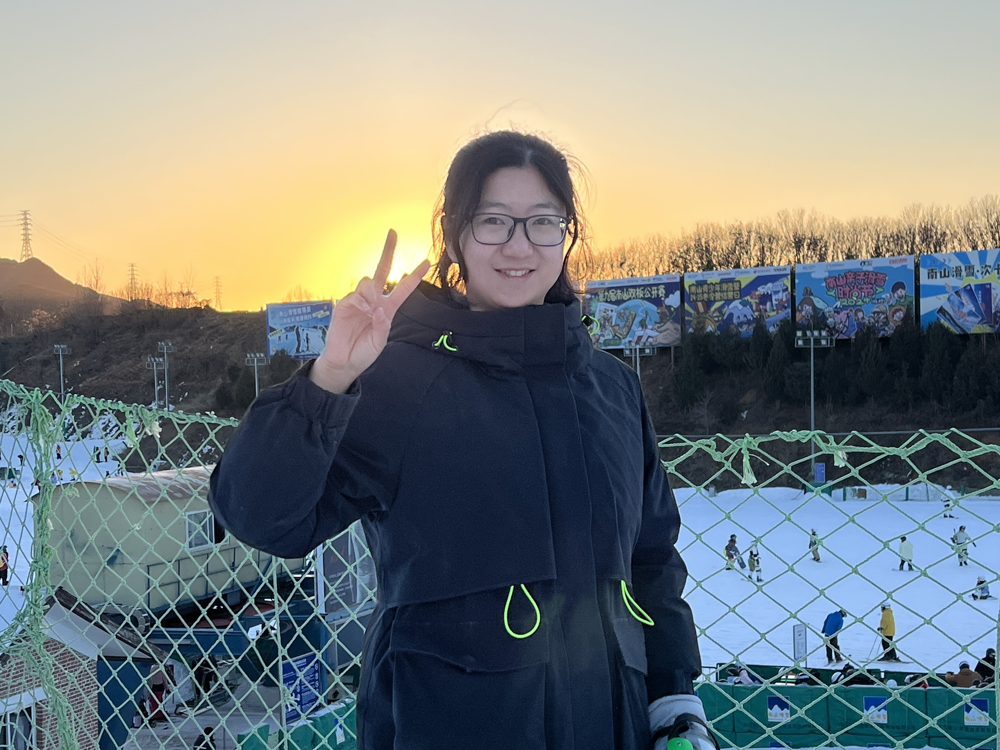
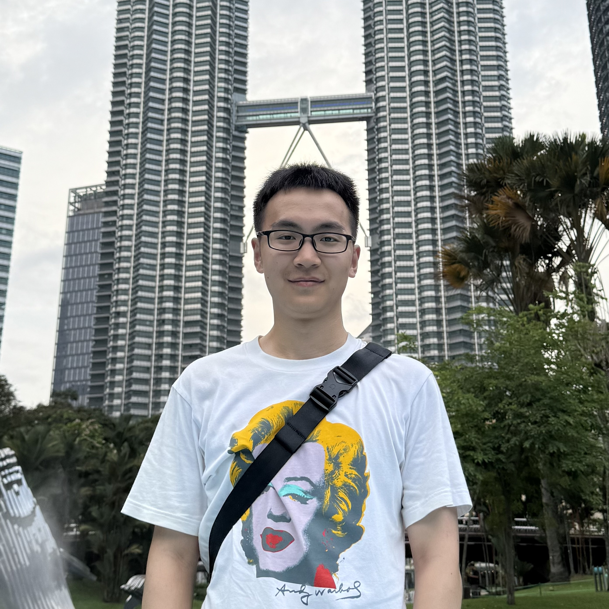

Our Team
Meet the researchers advancing superintelligence (SI) and data analytics

Prof. Chen Zhang (张晨)
Tenured Associate Professor & Principal Investigator
Department of Industrial Engineering, Tsinghua University
About
Chen Zhang leads SAIL Lab at Tsinghua University. Her research combines statistics and machine learning to understand complex systems, identify anomalies and their causes, and guide data collection and decisions. Applications include manufacturing, networked systems, and healthcare.
Research Interests
- Time-series analysis, anomaly detection, and causal inference
- Multimodal large language models
- Modeling, monitoring, and control of engineering systems
- Spatiotemporal learning for networked and distributed systems
- Adaptive sensing and decision making under resource constraints
Education
- Ph.D. in Industrial Systems Engineering & Management, National University of Singapore (2017)
- B.E. in Electronic Science and Technology, Tianjin University (2012)
Contact
- Email: zhangchen01@tsinghua.edu.cn
- Office: Room 214A, Shunde Building, Tsinghua University
- Tel: +86-10-62796135
Research Fellows
Yujie Ma is a Postdoctoral Fellow in the Department of Industrial Engineering at Tsinghua University, China. She received her Ph.D. in Management Science and Engineering from Tianjin University in January 2022. Her research interests include supply chain resilience, bi-level programming, and deep reinforcement learning.
Research GraghBo Zhang received the Ph.D. degree in statistics from the University of Essex in April 2022. He is currently a Post-Doctoral Researcher with Tsinghua University. His main research interests include statistical inference, deep learning, noisy label, and clustering.
Yifei Gao is a Postdoctoral Fellow in the Department of Industrial Engineering, Tsinghua University, China. He received the Doctor of Engineering degree in Management Science and Engineering at Beijing University of Posts and Telecommunications in June 2024. His research focuses on deep learning-based time series and functional data analysis.
Research Gragh
Manrui Jiang is a Postdoctoral Fellow in the Department of Industrial Engineering, Tsinghua University, China. She received the doctor degree in School of Management and Engineerin at Capital University of Economics and Business in June 2024. Her research focuses on deep learning, complex networks, and financial risk management.
Research GraghYue Yang is a Postdoctoral Fellow in the Department of Industrial Engineering at Tsinghua University, China. She received her Ph.D. degree in Computer Science from the University of Nottingham in July 2026. Her research focuses on anomaly detection and anomaly prediction.
Yue Li is a Postdoctoral Fellow in the Department of Industrial Engineering at Tsinghua University, China. She received her Ph.D. from the University of New South Wales in December 2022. Her research focuses on causally interpretable mesh representation and anomaly detection for complex 3D structures.
Google ScholarPhD Students
Haijie Xu is currently a PhD student in the Department of Industrial Engineering of Tsinghua University. His research focuses on change point detection, functionl data analysis, tensor data analysis and causal inference.
Research GraghTian Lan is a PhD student in the department of Industrial Engineering. His research focuses on multimodal LLM and time-series anomaly detection.
Xuming An is currently a Ph.D Student in the Department of Industrial Engineering, Tsinghua University. He received the Master degree in Control Science and Engineering from Wuhan University in 2020. His current research interests include optimization algorithms, game theory and data-driven control of complex networked systems.
Research GraghResearch in advanced machine learning and statistical methodologies.
Hao Duong Le is a PhD candidate in the Industrial Engineering Department at Tsinghua University, focusing his research on deep learning foundation models, large language models (LLMs), and time series foundational models. He holds a Bachelor of Arts in Applied Foreign Languages from the Taiwan University of Science and Technology and a Master of Science in Engineering from Tsinghua University.

Likai Gong is a PhD student. His research interests include multimodal foundation models and time-series analysis.
Supporting research in data analytics and machine learning applications.
Junjie Han is an undergraduate researcher and incoming PhD student. His research interests include time-series anomaly explanation and causal inference.
Personal WebsiteMaster's Students
Dandan Du is currently pursuing a master's degree. Her research focuses on industrial time-series anomaly detection, investigating the application of causal inference to time-series anomaly mining.
Research Assistants
Mengyue Lyu is a Research Assistant. She received her master's degree in Business Analytics from the University of Warwick in 2025. Her research interests include time-series analysis and foundation models.
Notable Alumni
Jia Cao is a PhD student at the University of Wisconsin–Madison. She was a research assistant in the Department of Industrial Engineering at Tsinghua University. She received her Master’s degree from the Department of Computer Science, Faculty of Engineering, The University of Hong Kong, and her Bachelor’s degree from the School of Software, Dalian University of Technology. Her research interests include video anomaly detection, medical image analysis, and medical large language models.
Yingyuan Yang is a PhD student at the Chinese Academy of Sciences. He was a research assistant in the Department of Industrial Engineering at Tsinghua University. He received a Master's degree in Signal and Information Processing from the Shenzhen Institutes of Advanced Technology, University of Chinese Academy of Sciences in 2025. His research interests include time-series anomaly detection based on multimodal large language models (MLLMs) and interpretable analysis of time-series MLLMs.

Peiyao Liu received her Ph.D. in Industrial Engineering in 2025 (advised by Dr. Chen Zhang) and her B.Eng. in Precision Instrument in 2020, both from Tsinghua University. Her research focuses on functional data analysis, tensor decomposition, Gaussian processes, state space models, and Bayesian networks, with applications in advanced manufacturing and medical testing. Dr. Liu has published in leading international journals in Quality, Statistics, and Reliability, including IISE Transactions, Journal of Quality Technology, and IEEE Transactions on Knowledge and Data Engineering. Her work has been recognized with multiple prestigious awards, including the ICQSR, INFORMS-DMDA, INFORMS-QSR, IISE-QCRE, and QRSE. Currently, she is a Research Fellow in the Department of Industrial Systems Engineering and Management at the National University of Singapore, working under the guidance of Dr. Nan Chen.
Research GraghJunpeng Lin is currently an Algorithm Engineer at Huawei Technologies Co., Ltd., focusing on communication network operations and maintenance. He received his Master of Engineering degree in Management Science and Engineering from Tsinghua University in 2025. Prior to that, he obtained his Bachelor of Engineering degree in Industrial Engineering from Tsinghua University in 2022. During his graduate studies, his research interests included spatiotemporal data modeling and deep learning.
Research GraghBingjie He was a graduate student in Industrial Engineering, Tsinghua University. She received her Bachelor’s degree in Tsinghua University in 2020. Her research interest was transportation application, including urban flow prediction and anomaly detection. She is now pursuing her PhD degree in UC Berkeley, the US.
Congyu Han was a Research Assistant in the Department of Industrial Engineering, Tsinghua University, China. She has graduated from the Master of Information Systems Management program (Business Intelligence & Data Analytics pathway) at Carnegie Mellon University in December 2020. Her research focuses on adaptive sampling in the context of deep learning framwork. She is now pursuing her PhD degree in National University of Singapore.

Xin Xia has graduated from the M.S. program of Electrical and Computer Engineering in Georgia Institute of Technology, the US, in 2022 and received his bachelor degree of Electrical Engineering and Automation from Tianjin University, China, in 2020. He was a Research Assistant in the Department of Industrial Engineering, Tsinghua University. His research interest focuses on deep reinforcement learning and multi-modal data fusion and feature extraction based on pretrained language model. He is now pursuing his PhD degree in University of Wisconsin–Madison.
Research GraghXing Yang is an Associate Professor at Shenzhen MSU-BIT University. She received her Ph.D. in Industrial Engineering from Tsinghua University in 2023 and her B.S. in Industrial Engineering from Huazhong University of Science and Technology in 2016. Her research interests include causal discovery, statistical process monitoring, time-series analysis, and personalized medicine.
Faculty Profile Google Scholar Research GraphHao Qiu was once a Research Assistant in the Department of Industrial Engineering at Tsinghua University. He holds a Master of Statistics from Rice University and a B.S. in Actuarial Science and B.S. in Economics from University of Delaware. His research focuses on Time Series/ Spatial-Temporal data, Statistical Learning, and Stochastic Process Modeling and Estimation.
Jie Guo received her Ph.D. degree and bachelor degree in Industrial Engineering from Tsinghua University. And she is now an associate professor in Nanjing University of Aeronautics and Astronautics. Her interest research area is adaptive sampling, high dimensional data monitoring and reinforcement learning.
Research GraghWanshan Li is currently a lecturer in Jinan University. She received her Ph.D. degree in the Department of Industrial Engineering, Tsinghua University, China, and her BSc in Control Science and Engineering from Shandong University, China. Her research focuses on maintenance strategies optimization of multiple‐component systems with complex networked structure.
Research GraghPeng Zhou is currently a associate professor at the School of Mechanical Engineering, Guizhou University, Guiyang, China. His current research interests include in Statistical modeling and monitoring for complex systems, Intelligent maintenance and health management.